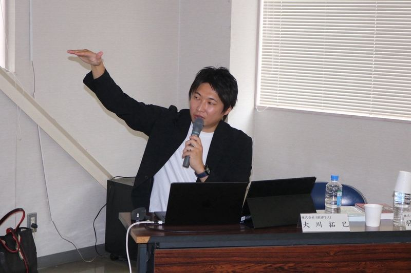
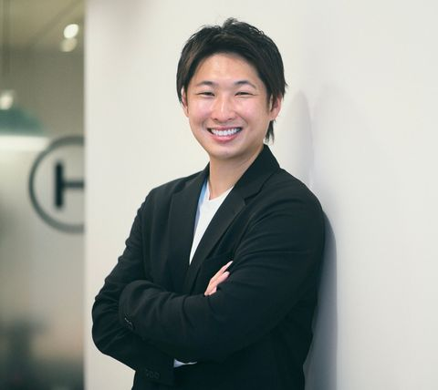

PORTFOLIO
生成AIで、人生に余白を。
自治体・学校・企業向けの生成AI講座・研修。
初めての方にも、身近な例と実演で分かりやすく伝えます。
SHIFT AI 認定講師・AIP Dimensions 代表 大川 拓巳
- 72回 登壇
- 6,356名 延べ受講者
- ※過去のオンライン登壇を含む累計。2026年10月26日時点

Services
ご依頼いただけること
対象に合わせて、3つの形でご提供しています。いずれも「初心者が実際に使えるようになる」ことをゴールにしています。
-
自治体・地域団体・農業団体向け
はじめての生成AI活用講座
- 内容
- 生成AIの基本と注意点を学び、スマートフォンで実際に使ってみる講座です。生活や仕事に身近な題材を扱い、手を動かす時間を中心に組み立てます。
- 終了時にできること
- 自分で生成AIに質問し、回答を確認しながら活用できる。
- 目安
- 90分〜2時間×1〜2回／10〜120名
-
学校向け（高校生を中心に）
生成AIリテラシー授業
- 内容
- 生成AIの仕組み／できること・できないこと／個人情報・著作権・誤情報など、使う上で知っておくべきこと。
- 終了時にできること
- 利用時の注意点を自分の言葉で説明し、適切な使い方を考えられる。
- 目安
- 授業1コマ（50分）〜2コマ／クラス単位〜学年単位
-
企業向け（中小企業の経営者・社員）
生成AI活用研修
- 内容
- 文書作成・情報整理・企画づくりでの生成AI活用／自社の業務に当てはめるワーク／社内で使うときのルールづくり。
- 終了時にできること
- 自分の業務を一つ選び、実際に使う指示文と利用時の注意点を整理できる。
- 目安
- 半日〜1日、または2〜3時間×複数回／5〜50名
業務の棚卸しからツール選定・定着までのAI導入支援は、2026年11月から順次対応します。ご相談ください。
開催形式・費用について
- 開催形式対面・オンラインのどちらでも開催できます。静岡県内を中心に、全国どこへでも伺います。
- 費用講座内容・時間・人数・開催場所に応じてお見積もりします。交通費・宿泊費は料金に含めてご提示します。
- 実施後フォロー実施後1か月は、チャットまたはオンラインミーティングで講座内容に関するご質問にお答えします。必要に応じて延長のご相談も可能です。
上記にない形（短時間の講話、複数回の連続講座など）もご相談ください。
Cases
代表事例
自治体・団体・学校それぞれで、参加者がどう変わったかを中心に紹介します。
-

初めての生成AIを、実際に触って学ぶ市民講座
- 参加者の課題
- 生成AIに興味はあるものの、何から始めればよいか分からない地域住民が対象。各回の参加者は異なり、計40名が受講しました。
- 講座で工夫したこと
- 説明だけで終わらせず、参加者が実際に手を動かす時間を設けました。身近な使い方を通じて、生成AIの便利さと楽しさを体験する構成です。
- 受講者の評価
- 受講者40名全員からアンケート回答をいただき、講座満足度は5段階評価で4.8でした。参加枠20名に対して約4倍の申し込みがありました。※回答者40名・重複なし。2026年8月の受講後アンケート。
- 受講者の声
生成AIのセキュリティやリテラシーの部分がすごく腹落ちした
（40代・男性）
-

農業の仕事に結び付けて学ぶ、生成AI入門講座
- 参加者の課題
- 生成AIを農業の仕事や販促にどう使えるか、具体的にイメージできないことが課題でした。
- 講座で工夫したこと
- 商品説明文・SNS投稿・チラシづくりなど、参加者の仕事に結び付く活用例を実演。安全に利用するための注意点も紹介しました。
- 受講後の反応
- SHIFT AIの開催報告によると、受講後アンケートで9割以上が今後の経営へのAI導入や次回セミナーへの参加に意欲を示しました。参加者からは
チラシ作成や画像・音楽の即興生成デモが分かりやすく印象的だった
との声。当日は愛知県議会議員、西尾市産業部長、JA西三河常務理事長も出席しました。
-

生成AIの仕組みと、安全な使い方を考える授業
- 授業内容
- 生成AIの仕組みと利用時の注意点を、身近な例や問いかけを交えて紹介しました。
- 授業で目指したこと
- 生徒が生成AIの使い方と注意点を、自分の言葉で説明できるようになること。
- 授業後の反応
- 生徒からは
とても勉強になった
との声。先生からはこのAI時代、生成AIの科目は必修になっているので、とても助かります
とお礼をいただきました。


プレスリリース・メディア掲載
Profile
プロフィール

大川 拓巳 TAKUMI OKAWA
- AIP Dimensions 代表
- SHIFT AI 認定講師
- 静岡県商工会連合会ビジネスパワーアップ支援事業者
静岡県島田市在住。
高校卒業後、セミプロサッカー選手として5年間活躍（学生時代に世界大会出場経験あり）。
現在は、会員数40,000名を超える日本国内最大級のAI活用コミュニティ「SHIFT AI」で認定講師を務める。
これまで全国6,000名以上の生成AI活用をサポート。
また、
- 静岡県内5市町の生涯学習講師
- 静岡県商工会連合会 ビジネスパワーアップ支援事業者
として、地域住民や地方自治体を対象とした生成AI活用講座に加え、学生向けの生成AI教育・授業にも幅広く取り組んでいます。
2026年11月からは中小企業向けのAI導入もスタート予定。
「生成AIで人生に余白を生み出し、誰もが大切な人と豊かな時間を過ごせる社会へ」をモットーに、活動中。
- 6,356名これまでの延べ受講者数
- 72回登壇回数（オンライン含む）
※2026年10月26日時点
押すと合格証を表示します
選ばれる理由
生成AIに対する不安を解消し、参加者全員が「自分にも使える」と実感できる講座を提供します。
- 専門用語を使わず、背景から噛み砕いて伝える
「なぜそうなるのか」という背景から話すので、生成AIが初めての方でも置いていかれません。難しいことを、分かりやすく。
- 相手の現場に合わせて内容を組み立てる
農家の方には販促や日々の記録、高校生には仕組みと注意点、ビジネスパーソンには自分の業務での使い方。同じ講座を使い回さず、その場の参加者に合わせます。
- 講座のあとも使い続けられる状態をつくる
単発で終わらせず、講座後も日常生活や仕事の中で活用できるように。みなさまが少しずつ自走できるAI活用の土台づくりを支援します。
受講者の声
生成AIのセキュリティやリテラシーの部分がすごく腹落ちした
40代・男性／藤枝市 生成AI講座（2026年8月）
今後の講座へのご要望
次は個別でやってほしい
60代・女性他のツールも教えてほしい
50代・女性
Works
登壇実績
地域住民・地方自治体・学生向けの講座から、SHIFT AIでのウェビナー・合宿講座まで掲載しています。
-
 メイン講師・サブ講師
メイン講師・サブ講師SHIFT AI ELITE「AIエージェント実践講座」メイン講師・サブ講師（全16回）
2026年5月〜10月。社長秘書AI・SNSマーケターAI・法務コンプラAI・経理AIなど、職種別のAIエージェントを作り上げる講座を担当。
-
 講師
講師静岡県立浜北西高校「未来授業」
静岡県浜松市。高校1・2年生向けに、生成AIの仕組みとAIリテラシーを授業形式で。
-
 講師
講師G検定 中間ハーフ模試＆徹底解説ウェビナー
SHIFT AI。本番まで3週間の受験者向けに、73問の模試で現在地を確認し、つまずきやすい論点を解説。
-
 講師
講師G検定対策集中講座
SHIFT AI。初回から携わり通算5回目の登壇。「わかった気」から「解ける」へ。
-
 講師
講師SHIFT AI 名古屋オフ会「あなたの強みが仕事になる！」
名古屋市。AIコンサルタントをテーマに、自分の経験・強みを棚卸しして「選ばれる理由カード」を作るワークショップ。講義＋ワーク＋交流会の3時間。
-
 講師
講師藤枝市 生成AI講座 Day2（地域住民向け）
静岡県藤枝市。全2回の後半。AI初心者を中心に、実際に手を動かしながら生成AIの便利さを体験。受講後アンケート（回答40名・全2回の参加者全員）で「講座の満足度」は5段階中4.8。
-
 講師
講師G検定 中間ハーフ模試＆徹底解説ウェビナー
SHIFT AI 3周年記念イベントの一環。本番を意識した73問の模試と、正答率の低い問題の徹底解説。
-
 主催・講師
主催・講師超初心者向け Claude Code勉強会 in 掛川市
静岡県掛川市（AIP Dimensions主催）。名前は聞いたことがあるけれど使い方が分からない方向けに、導入から実践まで。
-
 講師
講師藤枝市 生成AI講座 Day1（地域住民向け）
静岡県藤枝市。参加枠20名に約4倍の申し込み。「生成AIって何？」から始める入門講座。
-
 講師
講師G検定対策集中講座（2日間）
SHIFT AI 3周年記念イベント。8月1日・2日の2日間で、合格の先の「AIを率いるリーダー」を目指す集中講義。
-
 講師
講師西尾鉢物出荷組合 サマーセミナー「初めての生成AI活用講座」
愛知県西尾市。生産者向けに生成AIの基本から農業現場での活用例までを講演。愛知県議・西尾市産業部長・JA西三河常務理事長が出席。
-
 講師
講師蒲郡市 農林水産課セミナー「ゼロから始めるChatGPT活用講座」
愛知県蒲郡市（蒲郡市農業経営士連絡協議会 主催）。みかん・いちご農家と県・市の職員向けに実演。SHIFT AIよりプレスリリースを発行。
-
 講師
講師SHIFT AI 名古屋オフ会「Claude Code実践オフ会」
名古屋市。講師の考え方を学び、グループワークで業種別スキルをチームで作る。満員御礼。
-
 講師
講師G検定対策ハーフ模試＆徹底解説ウェビナー
SHIFT AI。73問の真剣勝負と頻出ポイントの徹底解説。
-
 講師
講師G検定対策集中講座（2日間）
SHIFT AI。6月13日・14日の2日間で講義11時間、スライド411枚。「わかる」から「提案できる」へ。
-
 運営・サポート
運営・サポートゆるっと作業会 in 浜松
静岡県浜松市。県内各地から集まったメンバーと、AIツールを触りながら知見を共有する3時間。運営・サポートを担当。
-
 司会進行
司会進行SHIFT AI 名古屋オフ会「新年度ランチ大交流会2026」
名古屋市。司会進行を担当。AI活用のリアル事例と、次につながる出会いの場。先着60名が満席に。
-
 講師
講師G検定対策ハーフ模試＆徹底解説ウェビナー
SHIFT AI。講座申込者だけでなく一般公開ウェビナーとして開催。
-
 講師
講師AIコンサルタント シリーズ講義 Day11「紹介とパートナーシップ」
SHIFT AI。1件の受注を業界全体へ広げる「芋づる方式」で、案件を点→線→面で取っていく考え方を解説。
-
 登壇
登壇AIコンサルタント シリーズ講義 LT大会「0→1達成」リアルロードマップ共有会
SHIFT AI。シリーズ講義の受講者22名が実績を報告。達成までの道のりを受講者自身が共有する特別回。
-
 講師
講師G検定対策集中講座
SHIFT AI。合格をゴールにしない、その先のキャリアを描く集中講義。申込者は前回の約2.7倍。
-
 運営サポート
運営サポートゆるっと作業会 in 静岡
静岡市。SHIFT AI 47プロジェクトの一環。参加者同士でAIツールを触りながら学び合う作業会。
-
 講師
講師AIコンサルタント シリーズ講義 Day5「30秒で相手を惹きつける自己紹介カード作成」
SHIFT AI。交流会・イベントで「迷わず話せる人」になる実践ノウハウ。ブレイクアウトルームでロールプレイも実施。
-
 講師
講師G検定ハーフ模試＆徹底解説ウェビナー
SHIFT AI。本番直前の受験者向けに、73問・50分の模試と正答率50%以下の問題に絞った即解説。
-
 サポート講師
サポート講師SHIFT AI 初のリアル合宿「AI実装リアル合宿」サポート講師
東京・神田。「案件獲得」会場で参加者の個別相談に対応するサポート講師を担当。
-
 講師
講師G検定対策集中講座
SHIFT AI 初のG検定講座を初回から担当。10:00〜17:00の6時間、合格後のキャリアにつなげる集中講義。
-
 講師
講師静岡市内の自治体 生成AI活用講座 Day2（地域住民向け）
静岡市。全2回の後半。「学び続けたい」気持ちがある人は何歳でも最前線に立てる、と実感した回。
-
 登壇
登壇日本全国AI列島縦断リレー「地方在住AIトップランナーによる案件獲得ルート解説」
SHIFT AI プレミアムウェビナー。静岡県代表として登壇し、地方在住のまま案件を獲得するルートを自身の事例で解説。
-
 講師
講師静岡市内の自治体 生成AI活用講座 Day1（地域住民向け）
静岡市。定員20名に対して40名を超える応募があり抽選に。30代から70代まで幅広い世代が受講。
-
 講師
講師SHIFT AI 名古屋オフ会「Gemini 3.0×Canvaで“売れる”を科学する」
名古屋市。マーケティング要素を含めた、成果につながるチラシを爆速で作るワークショップに登壇。
-
 講師
講師農業×AIワークショップ
愛知県西尾市（主催 SHIFT AI、後援 西尾市・JA西三河）。農家の方向けに、スマホで今日から使える生成AIを体験。西尾市長も見学に。地元紙に掲載、プレスリリースを発行。
-
 講師
講師静岡県内の自治体 生成AI講座 Day2（ビジネスパーソン向け）
静岡県内。全2回の後半。画像生成の実演では驚きと笑いが起こる、前のめりの回に。
-
 講師
講師静岡県内の自治体 生成AI講座 Day1（ビジネスパーソン向け）
静岡県内。「生成AIは初めて」という初心者が中心。真剣な眼差しと「わかった！」の表情が印象的な回。
-
 サポート講師
サポート講師SHIFT AI 東京リアルイベント「AI爆速・資料作成ワークショップ」サポート講師
東京。約90名の会員が来場した資料作成ワークショップで、サポート講師を担当。
-
 モデレーター
モデレーターSHIFT AI LT大会「自作アプリで業務改善！」モデレーター
SHIFT AI ウェビナー。合宿参加メンバーの試行錯誤と実践事例を公開するLT大会のモデレーターを担当。
-
 運営・講師
運営・講師第2回 ゆるっと作業会 in 静岡
静岡市。自己紹介から各種AIツール体験・交流まで、あっという間の3時間。
-
 講評
講評SHIFT AI LT大会「AIを日常に取り入れるコツと使い方」講評役
SHIFT AI ウェビナー。4人のユーザーが語る実践事例の講評役として登壇。
-
 講師
講師雷ウェビナー「0から学ぶ クライアントに信頼される文章編集術」
SHIFT AI ウェビナー。AIライターは「リライト力」で差がつく。AIで書いた記事の編集術を解説。
-
 主催・講師
主催・講師静岡脳科学研究会「生成AIってなに？」勉強会
静岡県藤枝市（AIP Dimensions主催・無料）。生成AIとは何か、日常で使える活用術、注意点までを90分で。
-
 講師
講師業務効率化合宿「ChatGPTを“頼れる部下”に育てる」
SHIFT AI オンライン合宿。明日から使える業務効率化を、中級者向けの実践型で。
-
 登壇
登壇SHIFT AI 名古屋 AIライティング勉強会
名古屋市。雷ツールで差をつける、会員限定のライティング勉強会。
-
 講師
講師AIライター向け SEO案件獲得合宿
SHIFT AI オンライン合宿。「SEOってなに？」を完全初心者にも分かりやすく。記事作成からポートフォリオ作成までを実演。
-
 講師
講師AIライター質問回答会（第2回）
SHIFT AI ウェビナー。平日22時からの1時間に約200名が参加。初心者AIライターのつまずきポイントに回答。
-
 講師
講師ゆるっと作業会 in 静岡（静岡初開催）
静岡市。講師として参加。各種AIツールをみんなで触りながら学びをシェア。
-
 講師
講師AIライター必見「読まれる記事の構成術」
SHIFT AI ウェビナー。初の90分枠。月間300万PV超メディアのプロライターとして、読まれる見出し構成を添削つきで解説。
-
 講師
講師雷AIライター質問回答会（第1回）
SHIFT AI ウェビナー。Web業界を知り尽くす講師陣への質問にその場で回答。平日夜に160名が参加。
-
 登壇
登壇SHIFT AI 第1回LT大会「先人のAI活用失敗談から学ぶ成功事例」
SHIFT AI ウェビナー。初登壇。会員として自身のAI活用の失敗談と成功事例を共有。


現場の様子
静岡県立浜北西高校「未来授業」（2026年10月） 
名古屋オフ会「あなたの強みが仕事になる！」（2026年9月） 藤枝市 生成AI講座（2026年8月） 
Claude Code勉強会 in 掛川市（2026年8月） 西尾鉢物出荷組合 サマーセミナー（2026年7月） 
西尾鉢物出荷組合 サマーセミナー 会場の様子（2026年7月） 
蒲郡市 農林水産課セミナー（2026年7月） 
蒲郡市 農林水産課セミナー 参加者のみなさんと（2026年7月） 
名古屋オフ会 Claude Code実践オフ会（2026年6月） 
SHIFT AI 初のリアル合宿 東京（2026年2月） 
静岡市内の自治体 生成AI活用講座（2026年1月） 
農業×AIワークショップ 西尾市（2025年12月） 
農業×AIワークショップ 関係者のみなさんと（2025年12月） 
静岡県内の自治体 生成AI講座（2025年11月） 
東京リアルイベント サポート講師（2025年10月）


登壇実績 全72回の一覧
※2026年10月26日時点
全72回の登壇一覧を見る
2026年 54回
- SHIFT AI ELITE AIエージェント実践講座（メイン講師）SHIFT AI ELITE
- 静岡県立浜北西高校「未来授業」（高校生向け生成AI講座）自治体・団体・学校
- G検定ハーフ模試＆徹底解説ウェビナーG検定
- SHIFT AI ELITE AIエージェント実践講座（メイン講師）SHIFT AI ELITE
- SHIFT AI ELITE AIエージェント実践講座（メイン講師）SHIFT AI ELITE
- G検定対策集中講座G検定
- SHIFT AI ELITE AIエージェント実践講座（メイン講師）SHIFT AI ELITE
- 名古屋オフ会「AIコンサルタント」（登壇）名古屋オフ会
- AI講師勉強会AI講師勉強会
- SHIFT AI ELITE AIエージェント実践講座（メイン講師）SHIFT AI ELITE
- SHIFT AI ELITE AIエージェント実践講座（メイン講師）SHIFT AI ELITE
- AI講師勉強会AI講師勉強会
- SHIFT AI ELITE AIエージェント実践講座（メイン講師）SHIFT AI ELITE
- 静岡県内 生涯学習講座「生成AI活用講座」自治体・団体・学校
- G検定ハーフ模試＆徹底解説ウェビナーG検定
- Claude Code勉強会作業会・勉強会
- 静岡県内 生涯学習講座「生成AI活用講座」自治体・団体・学校
- G検定対策集中講座G検定
- G検定対策集中講座G検定
- 西尾鉢物出荷組合 サマーセミナー「初めての生成AI活用講座」自治体・団体・学校
- SHIFT AI ELITE AIエージェント実践講座（メイン講師）SHIFT AI ELITE
- SHIFT AI ELITE AIエージェント実践講座（メイン講師）SHIFT AI ELITE
- AI講師勉強会AI講師勉強会
- SHIFT AI ELITE AIエージェント実践講座（メイン講師）SHIFT AI ELITE
- 蒲郡市 農林水産課セミナー「ゼロから始めるChatGPT活用講座」自治体・団体・学校
- SHIFT AI ELITE AIエージェント実践講座（メイン講師）SHIFT AI ELITE
- 名古屋オフ会「Claude Code実践オフ会」名古屋オフ会
- G検定ハーフ模試＆徹底解説ウェビナーG検定
- SHIFT AI ELITE AIエージェント実践講座（メイン講師）SHIFT AI ELITE
- SHIFT AI ELITE AIエージェント実践講座（メイン講師）SHIFT AI ELITE
- G検定対策集中講座G検定
- G検定対策集中講座G検定
- SHIFT AI ELITE AIエージェント実践講座（サブ講師）SHIFT AI ELITE
- SHIFT AI ELITE AIエージェント実践講座（サブ講師）SHIFT AI ELITE
- AI講師勉強会AI講師勉強会
- SHIFT AI ELITE AIエージェント実践講座（サブ講師）SHIFT AI ELITE
- ゆるっと作業会 in 浜松作業会・勉強会
- 名古屋オフ会（司会進行）名古屋オフ会
- G検定ハーフ模試＆徹底解説ウェビナーG検定
- AIコンサルタント シリーズ講義 Day11SHIFT AI ウェビナー
- AIコンサルタント シリーズ講義 LT大会SHIFT AI ウェビナー
- G検定対策集中講座G検定
- AI講師勉強会AI講師勉強会
- AI講師勉強会AI講師勉強会
- AI講師勉強会AI講師勉強会
- ゆるっと作業会作業会・勉強会
- AIコンサルタント シリーズ講義 Day5SHIFT AI ウェビナー
- G検定ハーフ模試＆徹底解説ウェビナーG検定
- 東京リアル合宿 サポート講師（案件獲得会場）SHIFT AI ウェビナー
- AIコンサルタント シリーズ講義 Day1SHIFT AI ウェビナー
- G検定対策集中講座G検定
- 静岡県内 生涯学習講座「生成AI活用講座」自治体・団体・学校
- AI列島縦断リレー「地方在住AIトップランナーによる案件獲得ルート解説」（静岡県代表）SHIFT AI ウェビナー
- 静岡県内 生涯学習講座「生成AI活用講座」自治体・団体・学校
2025年 18回
- 名古屋オフ会「Gemini×Canva」（登壇）名古屋オフ会
- 農業×AIワークショップ（JA西三河）自治体・団体・学校
- 静岡県内 生涯学習講座「生成AI活用講座」自治体・団体・学校
- 静岡県内 生涯学習講座「生成AI活用講座」自治体・団体・学校
- 東京リアルイベント サポート講師SHIFT AI ウェビナー
- LT大会（モデレーター）SHIFT AI ウェビナー
- ゆるっと作業会作業会・勉強会
- LT大会（講評役）SHIFT AI ウェビナー
- AIで書いた記事のリライト法（ウェビナー）SHIFT AI ウェビナー
- 藤枝市 生成AI勉強会（自主開催）自治体・団体・学校
- 業務効率化合宿SHIFT AI ウェビナー
- 名古屋オフ会（登壇）名古屋オフ会
- SEO案件獲得合宿SHIFT AI ウェビナー
- AIライター質問回答会SHIFT AI ウェビナー
- ゆるっと作業会作業会・勉強会
- 読まれる記事の構成術（ウェビナー）SHIFT AI ウェビナー
- AIライター質問回答会SHIFT AI ウェビナー
- LT大会（初登壇）SHIFT AI ウェビナー
Flow
ご依頼の流れ
- 1
お問い合わせ
メールまたはXのDMで、目的・対象者・時期の目安をお知らせください。
- 2
ヒアリング
対象者の経験、現在の困りごと、開催場所や設備（オンラインの場合は使うツール）、講座で目指す状態を確認します。
- 3
内容のご提案
目的に合わせた構成・時間・費用をご提案します。
- 4
実施
講座・セミナー・研修を実施。初心者の方でも「自分にも使える」と実感できる内容にします。
- 5
実施後フォロー
実施後1か月は、チャットまたはオンラインミーティングで質問にお答えします。次のステップのご相談も歓迎です。
よくある質問
- オンライン開催はできますか？
- できます。対面・オンラインのどちらでも開催しています。対面とオンラインを組み合わせた形もご相談ください。
- どの地域まで対応できますか？
- 静岡県内を中心に、全国どこへでも伺います。遠方の場合はオンライン開催も選べます。
- 費用はどのように決まりますか？
- 講座内容・時間・人数・開催場所に応じてお見積もりします。交通費・宿泊費は料金に含めてご提示するので、追加で発生しません。
- 講座後に質問はできますか？
- 実施後1か月は、チャットまたはオンラインミーティングで講座内容に関するご質問にお答えします。必要に応じて延長のご相談も可能です。
- 少人数や短時間でも依頼できますか？
- できます。30分程度の講話や、数名の勉強会、複数回の連続講座など、形に合わせてご提案します。
Contact
講座・研修のご相談
対面・オンラインのどちらでも実施しています。ご希望の時期・対象者・人数・開催場所（またはオンライン）を分かる範囲でお知らせください。目的に合わせて内容とお見積もりをご提案します。
（例：地域団体セミナー / 学生向け講座 / 企業向け社内研修 など）
通常2〜3営業日以内に返信します。
お問い合わせの例
件名：生成AI講座・研修の相談 団体名・お名前： 対象者：（例）地域住民、高校生、社員 など 参加予定人数：（例）20名 開催希望時期：（例）2027年1月〜2月のいずれか 開催場所・地域：（例）静岡県○○市の公民館／オンライン 相談したい内容：（例）初心者向けに2時間の講座をお願いしたい ご予算の目安（任意）： ※未定の項目は「未定」で構いません。
この形でなくても大丈夫です。分かる範囲でお送りください。
コピーできませんでした。上の文章を選択してコピーしてください。